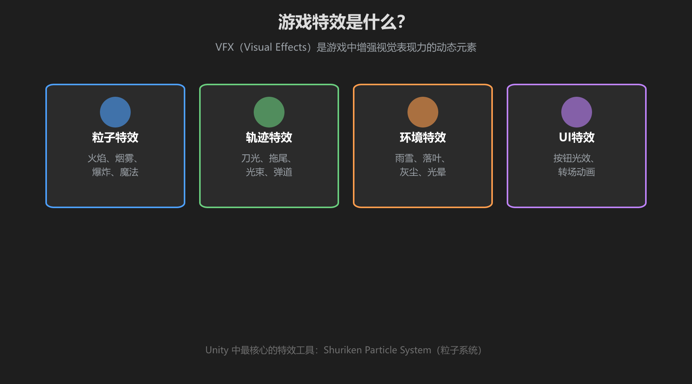
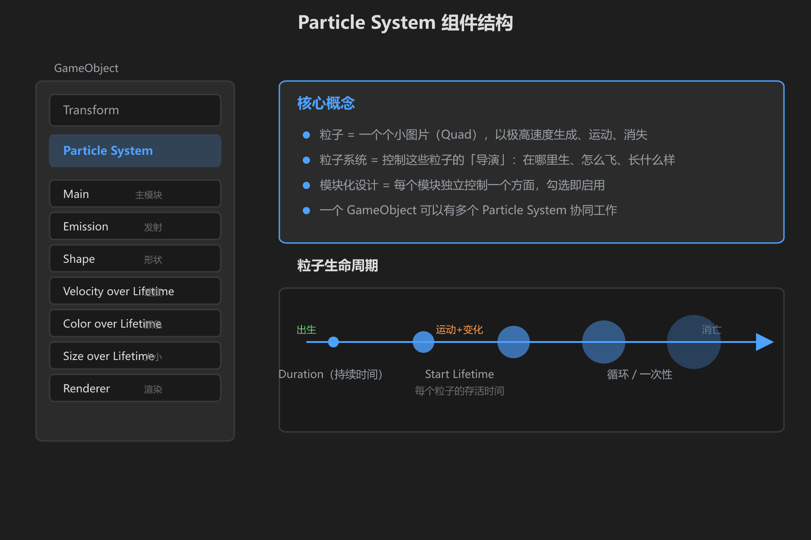
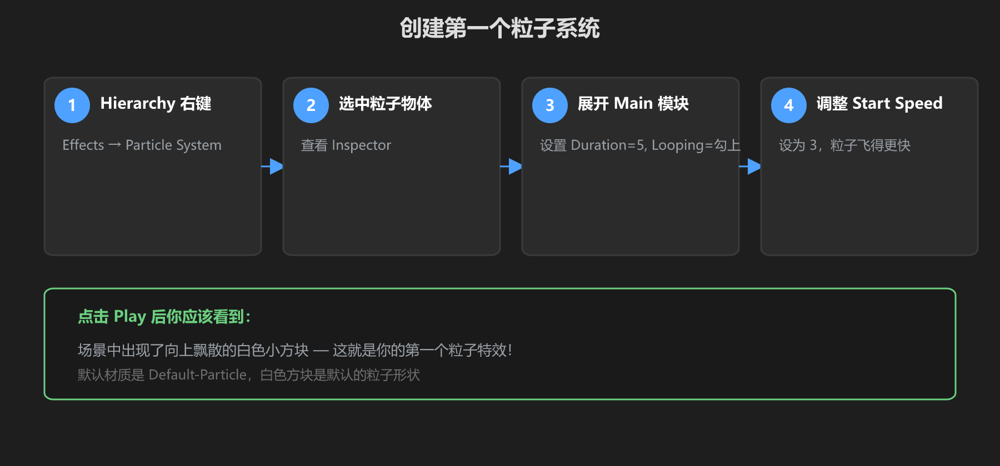

第 1 篇：特效是什么 — 认识 Particle System
特效（VFX）是游戏里一切「动态的视觉元素」。火焰、烟雾、魔法光球、爆炸——都是特效。Unity 里做特效的核心工具叫 Particle System（粒子系统）。
1. 游戏特效的四大类型
在 VRChat 世界里，你常见的特效大致分为四类：

图：游戏特效的四大类型 — 粒子、轨迹、环境、UI
| 类型 | 举例 | 在 VRChat 中的用途 |
|---|---|---|
| 粒子特效 | 火焰、烟雾、爆炸、魔法 | 世界装饰、技能效果、传送特效 |
| 轨迹特效 | 刀光、拖尾、光束 | 武器拖尾、激光指示器 |
| 环境特效 | 雨雪、落叶、灰尘 | 世界氛围、天气系统 |
| UI 特效 | 按钮光效、转场 | 菜单动画、提示高亮 |
2. 粒子系统是什么
粒子系统不是一个「物体」，而是一个 生成器。它按照你设定的规则，不断产生大量微小的图片（粒子），让它们飞行、变色、消失。几千个粒子一起动，就形成了火焰、烟雾等效果。

图：Particle System 组件结构 — 左侧是模块列表，右侧是核心概念和粒子生命周期
一句话理解：粒子系统 = 一个「粒子工厂」。你设定规则（每秒生几个、往哪飞、什么颜色），它自动生产粒子。
粒子系统的关键概念
| 概念 | 含义 |
|---|---|
| 粒子 | 一个微小的 2D 图片（Quad），大量粒子组成特效 |
| Duration | 粒子系统运行的总时长（秒），设为 5 就是播 5 秒 |
| Looping | 是否循环播放 — 火焰要勾上，爆炸不勾 |
| Start Lifetime | 每个粒子从出生到消失的存活时间 |
| Start Speed | 粒子出生时的初始速度 |
| Start Size | 粒子出生时的大小 |
3. 创建你的第一个粒子系统

图：创建粒子系统的步骤和预期效果
- 在 Hierarchy 窗口右键 →
Effects→Particle System - 场景中出现一个粒子系统，Inspector 里看到一大堆模块
- 点 Play 按钮，你会看到白色小方块向上飘
- 展开 Main 模块（第一个折叠的），试试改这些值：
| 参数 | 改一改试试 | 效果 |
|---|---|---|
| Start Speed | 从 5 改成 10 | 粒子飞得更快 |
| Start Size | 从 1 改成 3 | 粒子变大 |
| Start Lifetime | 从 5 改成 2 | 粒子消失得更快 |
| Start Color | 改成红色 | 粒子变红 |
注意：默认的粒子是白色方块，看起来不太像「特效」。下一篇我们会学怎么让它变得好看。
4. 粒子系统在 Hierarchy 中的结构
粒子系统就是一个普通的 GameObject，上面挂着 Particle System 组件和 Transform 组件。你可以像移动普通物体一样移动它、旋转它、缩放它。
- 位置 (Position)：粒子从这里发射
- 旋转 (Rotation)：粒子的发射方向（例如旋转 90° 让粒子水平喷射）
- 缩放 (Scale)：影响粒子系统的整体大小
学前检查清单
- 在 Unity 中成功创建了一个 Particle System
- 按了 Play 看到了白色方块粒子
- 修改了 Start Speed / Start Size / Start Color 并看到了变化
- 理解了「粒子系统 = 粒子工厂」这个概念